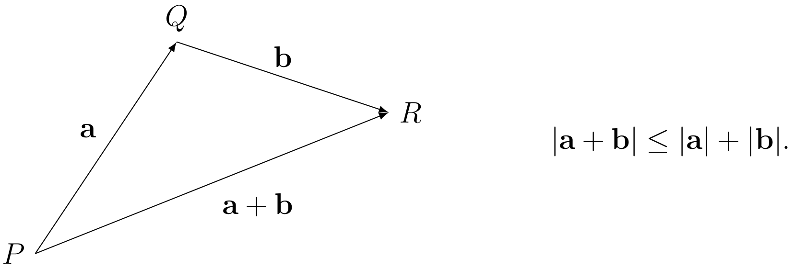

1. Revision of MAS107#
This module will build directly on the work you have done in MAS107. In particular, it is important that you can recall definitions and results about sequences of real numbers, as we will be using them in many of the proofs and problems to come. When reviewing lecture notes before and after classes, it may help to have a copy of your MAS107 notes to hand, so that you can refresh any details that you need.
1.1. Sequences and convergence#
Definition 1.1
Recall that a sequence \((x_n)\) is said to converge to limit \(l\in\mathbb{R}\) if for all \(\varepsilon>0\) there exists a number \(N\in\mathbb{N}\) such that
In other words, for any given tolerance \(\varepsilon\), the numbers \(x_n\) will eventually lie within \(\varepsilon\) of \(l\). We write \(x_n\rightarrow l\) as \(n\rightarrow\infty\).
Definition 1.2
A sequence \((x_n)\) is Cauchy if for all \(\varepsilon>0\) there is an \(N\in\mathbb{N}\) such that
A sequence being convergent means its terms are getting “closer and closer” to its limit \(l\). Being Cauchy says that the terms are getting “closer and closer” to one another. In fact, being convergent is strictly stronger than being Cauchy: if \(A\subseteq\mathbb{R}\) and \((x_n)\) is a sequence in \(A\), then
The converse statement doesn’t hold: \((x_n)\) being Cauchy does not imply that it converges to a limit in \(A\). For example, let \(A:=(0,1)\) and \(x_n=\frac{1}{n}\), for \(n\in\mathbb{N}\). Then, viewed as a sequence in \(A\), \((x_n)\) does not converge. However, if we instead view it as a sequence in \(\mathbb{R}\), we know that \(x_n\rightarrow 0\) as \(n\rightarrow\infty\). Since \((x_n)\) converges as a sequence in \(\mathbb{R}\), it must be a Cauchy sequence.
A set \(A\subseteq\mathbb{R}\) is called complete if every Cauchy sequence in \(A\) converges to a limit in \(A\). Therefore, for complete sets, being Cauchy is equivalent to convergence. The set \(\mathbb{Q}\) of all rational numbers is not complete, but the set \(\mathbb{R}\) of all reals is.
In MAS107, you saw how \(\mathbb{R}\) is constructed from \(\mathbb{Q}\) by including the limits of all rational Cauchy sequences.
1.2. Logic and quantifiers#
Analysis, like all areas of pure mathematics, is interested in proving things carefully and rigorously. This requires technical arguments, and in order to communicate unambiguously, we will need to use formal language such as quantifiers.
There are two important quantifiers used by mathematicians:
Universal quantifier: \(\forall\), “for all”
Existential quantifier: \(\exists\) “there exists”
Understanding mathematical statements involving quantifiers takes continual practice. A key advantage of studying analysis is there will be plenty of opportunity for this.
Example 0.2.3. Definition 0.2.1 can be expressed more succincly using quantifiers: $\( x_n\rightarrow l \; \text{ iff } \;\forall\varepsilon>0\; \exists N\in\mathbb{N} \;\text{ s.t. }\forall n\geq N\; |x_n-l|<\varepsilon. \)$
In words:
“\(x_n\) converges to \(l\) if and only if for all \(\varepsilon>0\), there exists \(N\in\mathbb{N}\) such that for all \(n\geq N\) we have \(|x_n-l|<\varepsilon\)”.
Exercise 0.2.4. Express Definition 0.2.2 in terms of quantifiers.
1.2.1. Negation#
The negation of a mathematical statement is its logical opposite. When negating statements involving quantifiers, the roles of \(\forall\) and \(\exists\) trade places, while all other parts of the statement are replaced with their logical opposites.
For example, consider the definition of disjoint sets.
The negation is
For an example involving longer statements, consider again the definition of convergence:
The negation of this is
That is, \(x_n\not\rightarrow l\) if and only if there is some \(\varepsilon>0\) for which, no matter how large we choose \(N\), there is an even larger \(n\) for which \(|x_n-l|\geq\varepsilon\). You can think of this as “\(|x_n-l|\geq\varepsilon\) infinitely often”.
1.3. Inequalities#
Inequalities are the primary tool of analysts. Here is a reminder of two important ones.
1.3.1. The triangle inequality#
Theorem 1.1
For all real numbers \(a\) and \(b\),
Note that the triangle inequality holds in higher dimensions, too. If \(\textbf{a}\) and \(\textbf{b}\) are vectors in \(\mathbb{R}^n\), then the vectors \(\mathbf{a}\), \(\mathbf{b}\) and \(\mathbf{a}+\mathbf{b}\) form sides of a triangle.
If the vertices of this triangle are \(P\), \(Q\) and \(R\), then the triangle inequality is just saying that it is a shorter distance to walk from \(P\) to \(R\) directly than it would be to walk there via the point \(Q\).
{kind=link}
The following corollary of the triangle inequality will also be frequently useful.
Corollary 0.2.6. For all \(a,b\in\mathbb{R}\),
Proof. Since the statement is symmetric in \(a\) and \(b\), we can assume without loss of generality that \(|a|>|b|\). By the triangle inequality,
and so
Since we’re assuming \(|a|>|b|\),
and so we are done.